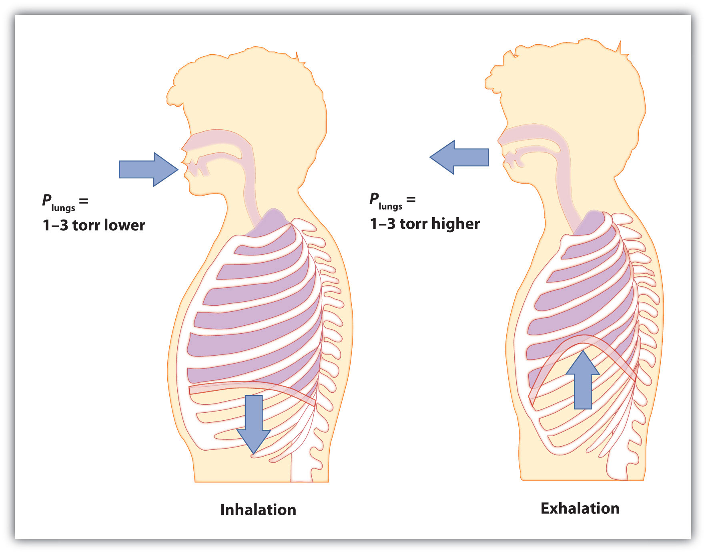

Perhaps one of the most spectacular chemical reactions involving a gas occurred on May 6, 1937, when the German airship Hindenburg exploded on approach to the Naval Air Station in Lakehurst, New Jersey. The actual cause of the explosion is still unknown, but the entire volume of hydrogen gas used to float the airship, about 200,000 m3, burned in less than a minute. Thirty-six people, including one on the ground, were killed.
Hydrogen is the lightest known gas. Any balloon filled with hydrogen gas will float in air if its mass is not too great. This makes hydrogen an obvious choice for flying machines based on balloons—airships, dirigibles, and blimps. However, hydrogen also has one obvious drawback: it burns in air according to the well-known chemical equation
2H2(g) + O2(g) → 2H2O(ℓ)So although hydrogen is an obvious choice, it is also a dangerous choice.
Helium gas is also lighter than air and has 92% of the lifting power of hydrogen. Why, then, was helium not used in the Hindenburg? In the 1930s, helium was much more expensive. In addition, the best source of helium at the time was the United States, which banned helium exports to pre–World War II Germany. Today all airships use helium, a legacy of the Hindenburg disaster.
Of the three basic phases of matter—solids, liquids, and gases—only one of them has predictable physical properties: gases. In fact, the study of the properties of gases was the beginning of the development of modern chemistry from its alchemical roots. The interesting thing about some of these properties is that they are independent of the identity of the gas. That is, it doesn’t matter if the gas is helium gas, oxygen gas, or sulfur vapors; some of their behavior is predictable and, as we will find, very similar. In this chapter, we will review some of the common behaviors of gases.
Let us start by reviewing some properties of gases. Gases have no definite shape or volume; they tend to fill whatever container they are in. They can compress and expand, sometimes to a great extent. Gases have extremely low densities, one-thousandth or less the density of a liquid or solid. Combinations of gases tend to mix together spontaneously; that is, they form solutions. Air, for example, is a solution of mostly nitrogen and oxygen. Any understanding of the properties of gases must be able to explain these characteristics.
Gases were among the first substances studied in terms of the modern scientific method, which was developed in the 1600s. It did not take long to recognize that gases all shared certain physical behaviors, suggesting that all gases could be described by one all-encompassing theory. Today, that theory is the kinetic theory of gasesThe fundamental model that describes the physical properties of gases.. It is based on the following statements:
Figure 6.1 "The Kinetic Theory of Gases" shows a representation of how we mentally picture the gas phase.
Figure 6.1 The Kinetic Theory of Gases

The kinetic theory of gases describes this state of matter as composed of tiny particles in constant motion with a lot of distance between the particles.
This model of gases explains some of the physical properties of gases. Because most of a gas is empty space, a gas has a low density and can expand or contract under the appropriate influence. The fact that gas particles are in constant motion means that two or more gases will always mix, as the particles from the individual gases move and collide with each other.
An ideal gasA gas that exactly follows the statements of the kinetic theory. is a gas that exactly follows the statements of the kinetic theory. Unfortunately, real gases are not ideal. Many gases deviate slightly from agreeing perfectly with the kinetic theory of gases. However, most gases adhere to the statements so well that the kinetic theory of gases is well accepted by the scientific community.
State the ideas behind the kinetic theory of gases.
The average speed of gas particles depends on what single variable?
Define ideal gas. Does an ideal gas exist?
What is a gas called that is not an ideal gas? Do such gases exist?
Gases consist of tiny particles of matter that are in constant motion. Gas particles are constantly colliding with each other and the walls of a container. These collisions are elastic; that is, there is no net loss of energy from the collisions. Gas particles are separated by large distances, with the size of a gas particle tiny compared to the distances that separate them. There are no interactive forces (i.e., attraction or repulsion) between the particles of a gas. The average speed of gas particles is dependent on the temperature of the gas.
An ideal gas is a gas that exactly follows the statements of the kinetic theory of gases. Ideal gases do not exist, but the kinetic theory allows us to model them.
The kinetic theory of gases indicates that gas particles are always in motion and are colliding with other particles and the walls of the container holding them. Although collisions with container walls are elastic (i.e., there is no net energy gain or loss because of the collision), a gas particle does exert a force on the wall during the collision. The accumulation of all these forces distributed over the area of the walls of the container causes something we call pressure. PressureForce per unit area. (P) is defined as the force of all the gas particle/wall collisions divided by the area of the wall:
All gases exert pressure; it is one of the fundamental measurable quantities of this phase of matter. Even our atmosphere exerts pressure—in this case, the gas is being “held in” by the earth’s gravity, rather than the gas being in a container. The pressure of the atmosphere is about 14.7 pounds of force for every square inch of surface area: 14.7 lb/in2.
Pressure has a variety of units. The formal, SI-approved unit of pressure is the pascal (Pa), which is defined as 1 N/m2 (one newton of force over an area of one square meter). However, this is usually too small in magnitude to be useful. A common unit of pressure is the atmosphereA unit of pressure equal to the average atmospheric pressure at sea level; defined as exactly 760 mmHg. (atm), which was originally defined as the average atmospheric pressure at sea level.
However, “average atmospheric pressure at sea level” is difficult to pinpoint because of atmospheric pressure variations. A more reliable and common unit is millimeters of mercuryThe amount of pressure exerted by a column of mercury exactly 1 mm high. (mmHg), which is the amount of pressure exerted by a column of mercury exactly 1 mm high. An equivalent unit is the torrAnother name for a millimeter of mercury., which equals 1 mmHg. (The torr is named after Evangelista Torricelli, a seventeenth-century Italian scientist who invented the mercury barometer.) With these definitions of pressure, the atmosphere unit is redefined: 1 atm is defined as exactly 760 mmHg, or 760 torr. We thus have the following equivalences:
We can use these equivalences as with any equivalences—to perform conversions from one unit to another. Relating these to the formal SI unit of pressure, 1 atm = 101,325 Pa.
How many atmospheres are there in 595 torr?
Solution
Using the pressure equivalences, we construct a conversion factor between torr and atmospheres: . Thus,
Because the numbers in the conversion factor are exact, the number of significant figures in the final answer is determined by the initial value of pressure.
Test Yourself
How many atmospheres are there in 1,022 torr?
Answer
1.345 atm
The atmosphere on Mars is largely CO2 at a pressure of 6.01 mmHg. What is this pressure in atmospheres?
Solution
Use the pressure equivalences to construct the proper conversion factor between millimeters of mercury and atmospheres.
At the end, we expressed the answer in scientific notation.
Test Yourself
Atmospheric pressure is low in the eye of a hurricane. In a 1979 hurricane in the Pacific Ocean, a pressure of 0.859 atm was reported inside the eye. What is this pressure in torr?
Answer
652 torr
Define pressure. What causes it?
Define and relate three units of pressure.
If a force of 16.7 N is pressed against an area of 2.44 m2, what is the pressure in pascals?
If a force of 2,546 N is pressed against an area of 0.0332 m2, what is the pressure in pascals?
Explain why the original definition of atmosphere did not work well.
What units of pressure are equal to each other?
How many atmospheres are in 889 mmHg?
How many atmospheres are in 223 torr?
How many torr are in 2.443 atm?
How many millimeters of mercury are in 0.334 atm?
How many millimeters of mercury are in 334 torr?
How many torr are in 0.777 mmHg?
How many pascals are there in 1 torr?
A pressure of 0.887 atm equals how many pascals?
Pressure is force per unit area. It is caused by gas particles hitting the walls of its container.
6.84 Pa
Because the atmospheric pressure at sea level is variable, it is not a consistent unit of pressure.
1.17 atm
1,857 torr
334 mmHg
133 Pa
When seventeenth-century scientists began studying the physical properties of gases, they noticed some simple relationships between some of the measurable properties of the gas. Take pressure (P) and volume (V), for example. Scientists noted that for a given amount of a gas (usually expressed in units of moles [n]), if the temperature (T) of the gas was kept constant, pressure and volume were related: As one increases, the other decreases. As one decreases, the other increases. We say that pressure and volume are inversely related.
There is more to it, however: pressure and volume of a given amount of gas at constant temperature are numerically related. If you take the pressure value and multiply it by the volume value, the product is a constant for a given amount of gas at a constant temperature:
P × V = constant at constant n and TIf either volume or pressure changes while amount and temperature stay the same, then the other property must change so that the product of the two properties still equals that same constant. That is, if the original conditions are labeled P1 and V1 and the new conditions are labeled P2 and V2, we have
P1V1 = constant = P2V2where the properties are assumed to be multiplied together. Leaving out the middle part, we have simply
P1V1 = P2V2 at constant n and TThis equation is an example of a gas law. A gas lawA simple mathematical formula that allows one to model, or predict, the behavior of a gas. is a simple mathematical formula that allows you to model, or predict, the behavior of a gas. This particular gas law is called Boyle’s lawA gas law that relates pressure and volume at constant temperature and amount., after the English scientist Robert Boyle, who first announced it in 1662. Figure 6.2 "Boyle’s Law" shows two representations of how Boyle’s law works.
Figure 6.2 Boyle’s Law

A piston having a certain pressure and volume (left piston) will have half the volume when its pressure is twice as much (right piston). One can also plot P versus V for a given amount of gas at a certain temperature; such a plot will look like the graph on the right.
Boyle’s law is an example of a second type of mathematical problem we see in chemistry—one based on a mathematical formula. Tactics for working with mathematical formulas are different from tactics for working with conversion factors. First, most of the questions you will have to answer using formulas are word-type questions, so the first step is to identify what quantities are known and assign them to variables. Second, in most formulas, some mathematical rearrangements (i.e., algebra) must be performed to solve for an unknown variable. The rule is that to find the value of the unknown variable, you must mathematically isolate the unknown variable by itself and in the numerator of one side of the equation. Finally, units must be consistent. For example, in Boyle’s law there are two pressure variables; they must have the same unit. There are also two volume variables; they also must have the same unit. In most cases, it won’t matter what the unit is, but the unit must be the same on both sides of the equation.
A sample of gas has an initial pressure of 2.44 atm and an initial volume of 4.01 L. Its pressure changes to 1.93 atm. What is the new volume if temperature and amount are kept constant?
Solution
First, determine what quantities we are given. We are given an initial pressure and an initial volume, so let these values be P1 and V1:
P1 = 2.44 atm and V1 = 4.01 LWe are given another quantity, final pressure of 1.93 atm, but not a final volume. This final volume is the variable we will solve for.
P2 = 1.93 atm and V2 = ? LSubstituting these values into Boyle’s law, we get
(2.44 atm)(4.01 L) = (1.93 atm)V2To solve for the unknown variable, we isolate it by dividing both sides of the equation by 1.93 atm—both the number and the unit:
Note that, on the left side of the equation, the unit atm is in the numerator and the denominator of the fraction. They cancel algebraically, just as a number would. On the right side, the unit atm and the number 1.93 are in the numerator and the denominator, so the entire quantity cancels:
What we have left is
Now we simply multiply and divide the numbers together and combine the answer with the L unit, which is a unit of volume. Doing so, we get
V2 = 5.07 LDoes this answer make sense? We know that pressure and volume are inversely related; as one decreases, the other increases. Pressure is decreasing (from 2.44 atm to 1.93 atm), so volume should be increasing to compensate, and it is (from 4.01 L to 5.07 L). So the answer makes sense based on Boyle’s law.
Test Yourself
If P1 = 334 torr, V1 = 37.8 mL, and P2 = 102 torr, what is V2?
Answer
124 mL
As mentioned, you can use any units for pressure or volume, but both pressures must be expressed in the same units, and both volumes must be expressed in the same units.
A sample of gas has an initial pressure of 722 torr and an initial volume of 88.8 mL. Its volume changes to 0.663 L. What is the new pressure?
Solution
We can still use Boyle’s law to answer this, but now the two volume quantities have different units. It does not matter which unit we change, as long as we perform the conversion correctly. Let us change the 0.663 L to milliliters:
Now that both volume quantities have the same units, we can substitute into Boyle’s law:
The mL units cancel, and we multiply and divide the numbers to get
P2 = 96.7 torrThe volume is increasing, and the pressure is decreasing, which is as expected for Boyle’s law.
Test Yourself
If V1 = 456 mL, P1 = 308 torr, and P2 = 1.55 atm, what is V2?
Answer
119 mL
There are other measurable characteristics of a gas. One of them is temperature (T). Perhaps one can vary the temperature of a gas sample and note what effect it has on the other properties of the gas. Early scientists did just this, discovering that if the amount of a gas and its pressure are kept constant, then changing the temperature changes the volume (V). As temperature increases, volume increases; as temperature decreases, volume decreases. We say that these two characteristics are directly related.
A mathematical relationship between V and T should be possible except for one thought: what temperature scale should we use? We know from Chapter 2 "Measurements" that science uses several possible temperature scales. Experiments show that the volume of a gas is related to its absolute temperature in Kelvin, not its temperature in degrees Celsius. If the temperature of a gas is expressed in kelvins, then experiments show that the ratio of volume to temperature is a constant:
We can modify this equation as we modified Boyle’s law: the initial conditions V1 and T1 have a certain value, and the value must be the same when the conditions of the gas are changed to some new conditions V2 and T2, as long as pressure and the amount of the gas remain constant. Thus, we have another gas law:
This gas law is commonly referred to as Charles’s lawA gas law that relates volume and temperature at constant pressure and amount., after the French scientist Jacques Charles, who performed experiments on gases in the 1780s. The tactics for using this mathematical formula are similar to those for Boyle’s law. To determine an unknown quantity, use algebra to isolate the unknown variable by itself and in the numerator; the units of similar variables must be the same. But we add one more tactic: all temperatures must be expressed in the absolute temperature scale (Kelvin). As a reminder, we review the conversion between the absolute temperature scale and the Celsius temperature scale:
K = °C + 273where K represents the temperature in kelvins, and °C represents the temperature in degrees Celsius.
Figure 6.3 "Charles’s Law" shows two representations of how Charles’s law works.
Figure 6.3 Charles’s Law

A piston having a certain volume and temperature (left piston) will have twice the volume when its temperature is twice as much (right piston). One can also plot V versus T for a given amount of gas at a certain pressure; such a plot will look like the graph on the right.
A sample of gas has an initial volume of 34.8 mL and an initial temperature of 315 K. What is the new volume if the temperature is increased to 559 K? Assume constant pressure and amount for the gas.
Solution
First, we assign the given values to their variables. The initial volume is V1, so V1 = 34.8 mL, and the initial temperature is T1, so T1 = 315 K. The temperature is increased to 559 K, so the final temperature T2 = 559 K. We note that the temperatures are already given in kelvins, so we do not need to convert the temperatures. Substituting into the expression for Charles’s law yields
We solve for V2 by algebraically isolating the V2 variable on one side of the equation. We do this by multiplying both sides of the equation by 559 K (number and unit). When we do this, the temperature unit cancels on the left side, while the entire 559 K cancels on the right side:
The expression simplifies to
By multiplying and dividing the numbers, we see that the only remaining unit is mL, so our final answer is
V2 = 61.8 mLDoes this answer make sense? We know that as temperature increases, volume increases. Here, the temperature is increasing from 315 K to 559 K, so the volume should also increase, which it does.
Test Yourself
If V1 = 3.77 L and T1 = 255 K, what is V2 if T2 = 123 K?
Answer
1.82 L
It is more mathematically complicated if a final temperature must be calculated because the T variable is in the denominator of Charles’s law. There are several mathematical ways to work this, but perhaps the simplest way is to take the reciprocal of Charles’s law. That is, rather than write it as
write the equation as
It is still an equality and a correct form of Charles’s law, but now the temperature variable is in the numerator, and the algebra required to predict a final temperature is simpler.
A sample of a gas has an initial volume of 34.8 L and an initial temperature of −67°C. What must be the temperature of the gas for its volume to be 25.0 L?
Solution
Here, we are looking for a final temperature, so we will use the reciprocal form of Charles’s law. However, the initial temperature is given in degrees Celsius, not kelvins. We must convert the initial temperature to kelvins:
−67°C + 273 = 206 KIn using the gas law, we must use T1 = 206 K as the temperature. Substituting into the reciprocal form of Charles’s law, we get
Bringing the 25.0 L quantity over to the other side of the equation, we get
The L units cancel, so our final answer is
T2 = 148 KThis is also equal to −125°C. As temperature decreases, volume decreases, which it does in this example.
Test Yourself
If V1 = 623 mL, T1 = 255°C, and V2 = 277 mL, what is T2?
Answer
235 K, or −38°C
Define gas law. What restrictions are there on the units that can be used for the physical properties?
What unit of temperature must be used for gas laws?
Boyle’s law relates the _____________ of a gas inversely with the ___________ of that gas.
Charles’s law relates the _____________ of a gas directly with the ___________ of that gas.
What properties must be held constant when applying Boyle’s law?
What properties must be held constant when applying Charles’s law?
A gas has an initial pressure of 1.445 atm and an initial volume of 1.009 L. What is its new pressure if volume is changed to 0.556 L? Assume temperature and amount are held constant.
A gas has an initial pressure of 633 torr and an initial volume of 87.3 mL. What is its new pressure if volume is changed to 45.0 mL? Assume temperature and amount are held constant.
A gas has an initial pressure of 4.33 atm and an initial volume of 5.88 L. What is its new volume if pressure is changed to 0.506 atm? Assume temperature and amount are held constant.
A gas has an initial pressure of 87.0 torr and an initial volume of 28.5 mL. What is its new volume if pressure is changed to 206 torr? Assume temperature and amount are held constant.
A gas has an initial volume of 638 mL and an initial pressure of 779 torr. What is its final volume in liters if its pressure is changed to 0.335 atm? Assume temperature and amount are held constant.
A gas has an initial volume of 0.966 L and an initial pressure of 3.07 atm. What is its final pressure in torr if its volume is changed to 3,450 mL? Assume temperature and amount are held constant.
A gas has an initial volume of 67.5 mL and an initial temperature of 315 K. What is its new volume if temperature is changed to 244 K? Assume pressure and amount are held constant.
A gas has an initial volume of 2.033 L and an initial temperature of 89.3 K. What is its volume if temperature is changed to 184 K? Assume pressure and amount are held constant.
A gas has an initial volume of 655 mL and an initial temperature of 295 K. What is its new temperature if volume is changed to 577 mL? Assume pressure and amount are held constant.
A gas has an initial volume of 14.98 L and an initial temperature of 238 K. What is its new temperature if volume is changed to 12.33 L? Assume pressure and amount are held constant.
A gas has an initial volume of 685 mL and an initial temperature of 29°C. What is its new temperature if volume is changed to 1.006 L? Assume pressure and amount are held constant.
A gas has an initial volume of 3.08 L and an initial temperature of −73°C. What is its new volume if temperature is changed to 104°C? Assume pressure and amount are held constant.
A gas law is a simple mathematical formula that allows one to predict the physical properties of a gas. The units of changing properties (volume, pressure, etc.) must be the same.
pressure; volume
amount of gas and temperature
2.62 atm
50.3 L
1.95 L
52.3 mL
260 K
444 K, or 171°C
You may notice in Boyle’s law and Charles’s law that we actually refer to four physical properties of a gas: pressure (P), volume (V), temperature (T), and amount (in moles; n). We do this because these are the only four independent physical properties of a gas. There are other physical properties, but they are all related to one (or more) of these four properties.
Boyle’s law is written in terms of two of these properties, with the other two being held constant. Charles’s law is written in terms of two different properties, with the other two being held constant. It may not be surprising to learn that there are other gas laws that relate other pairs of properties—as long as the other two are held constant. Here we will mention a few.
Gay-Lussac’s law relates pressure with absolute temperature. In terms of two sets of data, Gay-Lussac’s law is
Note that it has a structure very similar to that of Charles’s law, only with different variables—pressure instead of volume. Avogadro’s law introduces the last variable for amount. The original statement of Avogadro’s law states that equal volumes of different gases at the same temperature and pressure contain the same number of particles of gas. Because the number of particles is related to the number of moles (1 mol = 6.022 × 1023 particles), Avogadro’s law essentially states that equal volumes of different gases at the same temperature and pressure contain the same amount (moles, particles) of gas. Put mathematically into a gas law, Avogadro’s law is
(First announced in 1811, it was Avogadro’s proposal that volume is related to the number of particles that eventually led to naming the number of things in a mole as Avogadro’s number.) Avogadro’s law is useful because for the first time we are seeing amount, in terms of the number of moles, as a variable in a gas law.
A 2.45 L volume of gas contains 4.5 × 1021 gas particles. How many gas particles are there in 3.87 L if the gas is at constant pressure and temperature?
Solution
We can set up Avogadro’s law as follows:
We algebraically rearrange to solve for n2:
The L units cancel, so we solve for n2:
n2 = 7.1 × 1021 particlesTest Yourself
A 12.8 L volume of gas contains 3.00 × 1020 gas particles. At constant temperature and pressure, what volume does 8.22 × 1018 gas particles fill?
Answer
0.351 L
The variable n in Avogadro’s law can also stand for the number of moles of gas in addition to number of particles.
One thing we notice about all the gas laws is that, collectively, volume and pressure are always in the numerator, and temperature is always in the denominator. This suggests that we can propose a gas law that combines pressure, volume, and temperature. This gas law is known as the combined gas lawA gas law that combines pressure, volume, and temperature., and its mathematical form is
This allows us to follow changes in all three major properties of a gas. Again, the usual warnings apply about how to solve for an unknown algebraically (isolate it on one side of the equation in the numerator), units (they must be the same for the two similar variables of each type), and units of temperature must be in kelvins.
A sample of gas at an initial volume of 8.33 L, an initial pressure of 1.82 atm, and an initial temperature of 286 K simultaneously changes its temperature to 355 K and its volume to 5.72 L. What is the final pressure of the gas?
Solution
We can use the combined gas law directly; all the units are consistent with each other, and the temperatures are given in Kelvin. Substituting,
We rearrange this to isolate the P2 variable all by itself. When we do so, certain units cancel:
Multiplying and dividing all the numbers, we get
P2 = 3.29 atmUltimately, the pressure increased, which would have been difficult to predict because two properties of the gas were changing.
Test Yourself
If P1 = 662 torr, V1 = 46.7 mL, T1 = 266 K, P2 = 409 torr, and T2 = 371 K, what is V2?
Answer
105 mL
As with other gas laws, if you need to determine the value of a variable in the denominator of the combined gas law, you can either cross-multiply all the terms or just take the reciprocal of the combined gas law. Remember, the variable you are solving for must be in the numerator and all by itself on one side of the equation.
State Gay-Lussac’s law.
State Avogadro’s law.
Use Gay-Lussac’s law to determine the final pressure of a gas whose initial pressure is 602 torr, initial temperature is 356 K, and final temperature is 277 K. Assume volume and amount are held constant.
Use Gay-Lussac’s law to determine the final temperature of a gas whose initial pressure is 1.88 atm, initial temperature is 76.3 K, and final pressure is 6.29 atm. Assume volume and amount are held constant.
If 3.45 × 1022 atoms of Ar have a volume of 1.55 L at a certain temperature and pressure, what volume do 6.00 × 1023 atoms of Ar have at the same temperature and pressure?
If 5.55 × 1022 atoms of He occupy a volume of 2.06 L at 0°C at 1.00 atm pressure, what volume do 2.08 × 1023 atoms of He occupy under the same conditions?
Use Avogadro’s law to determine the final volume of a gas whose initial volume is 6.72 L, initial amount is 3.88 mol, and final amount is 6.10 mol. Assume pressure and temperature are held constant.
Use Avogadro’s law to determine the final amount of a gas whose initial volume is 885 mL, initial amount is 0.552 mol, and final volume is 1,477 mL. Assume pressure and temperature are held constant.
Use the combined gas law to complete this table. Assume that the amount remains constant in all cases.
| V1 = | P1 = | T1 = | V2 = | P2 = | T2 = |
|---|---|---|---|---|---|
| 56.9 mL | 334 torr | 266 K | 722 torr | 334 K | |
| 0.976 L | 2.33 atm | 443 K | 1.223 L | 355 K | |
| 3.66 L | 889 torr | 23°C | 2.19 L | 739 torr |
Use the combined gas law to complete this table. Assume that the amount remains constant in all cases.
| V1 = | P1 = | T1 = | V2 = | P2 = | T2 = |
|---|---|---|---|---|---|
| 56.7 mL | 1.07 atm | −34°C | 998 torr | 375 K | |
| 3.49 L | 338 torr | 45°C | 1,236 mL | 392 K | |
| 2.09 mL | 776 torr | 45°C | 0.461 mL | 0.668 atm |
A gas starts at the conditions 78.9 mL, 3.008 atm, and 56°C. Its conditions change to 35.6 mL and 2.55 atm. What is its final temperature?
The initial conditions of a sample of gas are 319 K, 3.087 L, and 591 torr. What is its final pressure if volume is changed to 2.222 L and temperature is changed to 299 K?
A gas starts with initial pressure of 7.11 atm, initial temperature of 66°C, and initial volume of 90.7 mL. If its conditions change to 33°C and 14.33 atm, what is its final volume?
A sample of gas doubles its pressure and doubles its absolute temperature. By what amount does the volume change?
The pressure of a gas is proportional to its absolute temperature.
468 torr
27.0 L
10.6 L
| V1 = | P1 = | T1 = | V2 = | P2 = | T2 = |
|---|---|---|---|---|---|
| 56.9 mL | 334 torr | 266 K | 33.1 mL | 722 torr | 334 K |
| 0.976 L | 2.33 atm | 443 K | 1.223 L | 1.49 atm | 355 K |
| 3.66 L | 889 torr | 23°C | 2.19 L | 739 torr | 147 K, or −126°C |
126 K, or −147°C
40.6 mL
So far, the gas laws we have considered have all required that the gas change its conditions; then we predict a resulting change in one of its properties. Are there any gas laws that relate the physical properties of a gas at any given time?
Consider a further extension of the combined gas law to include n. By analogy to Avogadro’s law, n is positioned in the denominator of the fraction, opposite the volume. So
Because pressure, volume, temperature, and amount are the only four independent physical properties of a gas, the constant in the above equation is truly a constant; indeed, because we do not need to specify the identity of a gas to apply the gas laws, this constant is the same for all gases. We define this constant with the symbol R, so the previous equation is written as
which is usually rearranged as
PV = nRTThis equation is called the ideal gas lawA gas law that relates all four independent physical properties of a gas under any conditions.. It relates the four independent properties of a gas at any time. The constant R is called the ideal gas law constant. Its value depends on the units used to express pressure and volume. Table 6.1 "Values of the Ideal Gas Law Constant " lists the numerical values of R.
Table 6.1 Values of the Ideal Gas Law Constant R
| Numerical Value | Units |
|---|---|
| 0.08205 | |
| 62.36 | |
| 8.314 |
The ideal gas law is used like any other gas law, with attention paid to the unit and making sure that temperature is expressed in Kelvin. However, the ideal gas law does not require a change in the conditions of a gas sample. The ideal gas law implies that if you know any three of the physical properties of a gas, you can calculate the fourth property.
A 4.22 mol sample of Ar has a pressure of 1.21 atm and a temperature of 34°C. What is its volume?
Solution
The first step is to convert temperature to kelvins:
34 + 273 = 307 KNow we can substitute the conditions into the ideal gas law:
The atm unit is in the numerator of both sides, so it cancels. On the right side of the equation, the mol and K units appear in the numerator and the denominator, so they cancel as well. The only unit remaining is L, which is the unit of volume that we are looking for. We isolate the volume variable by dividing both sides of the equation by 1.21:
Then solving for volume, we get
V = 87.9 LTest Yourself
A 0.0997 mol sample of O2 has a pressure of 0.692 atm and a temperature of 333 K. What is its volume?
Answer
3.94 L
At a given temperature, 0.00332 g of Hg in the gas phase has a pressure of 0.00120 mmHg and a volume of 435 L. What is its temperature?
Solution
We are not given the number of moles of Hg directly, but we are given a mass. We can use the molar mass of Hg to convert to the number of moles.
Pressure is given in units of millimeters of mercury. We can either convert this to atmospheres or use the value of the ideal gas constant that includes the mmHg unit. We will take the second option. Substituting into the ideal gas law,
The mmHg, L, and mol units cancel, leaving the K unit, the unit of temperature. Isolating T all by itself on one side, we get
Then solving for K, we get
T = 1,404 KTest Yourself
For a 0.00554 mol sample of H2, P = 23.44 torr and T = 557 K. What is its volume?
Answer
8.21 L
The ideal gas law can also be used in stoichiometry problems.
What volume of H2 is produced at 299 K and 1.07 atm when 55.8 g of Zn metal react with excess HCl?
Zn(s) + 2HCl(aq) → ZnCl2(aq) + H2(g)Solution
Here we have a stoichiometry problem where we need to find the number of moles of H2 produced. Then we can use the ideal gas law, with the given temperature and pressure, to determine the volume of gas produced. First, the number of moles of H2 is calculated:
Now that we know the number of moles of gas, we can use the ideal gas law to determine the volume, given the other conditions:
All the units cancel except for L, for volume, which means
V = 19.6 LTest Yourself
What pressure of HCl is generated if 3.44 g of Cl2 are reacted in 4.55 L at 455 K?
H2(g) + Cl2(g) → 2HCl(g)Answer
0.796 atm
It should be obvious by now that some physical properties of gases depend strongly on the conditions. What we need is a set of standard conditions so that properties of gases can be properly compared to each other. Standard temperature and pressure (STP)A set of benchmark conditions used to compare other properties of gases; about 1 atm for pressure and 273 K for temperature. is defined as exactly 100 kPa of pressure (0.986 atm) and 273 K (0°C). For simplicity, we will use 1 atm as standard pressure. Defining STP allows us to compare more directly the properties of gases that differ from each other.
One property shared among gases is a molar volume. The molar volumeThe volume of exactly 1 mol of a gas; equal to 22.4 L at STP. is the volume of 1 mol of a gas. At STP, the molar volume of a gas can be easily determined by using the ideal gas law:
All the units cancel except for L, the unit of volume. So
V = 22.4 LNote that we have not specified the identity of the gas; we have specified only that the pressure is 1 atm and the temperature is 273 K. This makes for a very useful approximation: any gas at STP has a volume of 22.4 L per mole of gas; that is, the molar volume at STP is 22.4 L/mol (Figure 6.4 "Molar Volume"). This molar volume makes a useful conversion factor in stoichiometry problems if the conditions are at STP. If the conditions are not at STP, a molar volume of 22.4 L/mol is not applicable. However, if the conditions are not at STP, the combined gas law can be used to calculate what the volume of the gas would be if at STP; then the 22.4 L/mol molar volume can be used.
Figure 6.4 Molar Volume

A mole of gas at STP occupies 22.4 L, the volume of a cube that is 28.2 cm on a side.
How many moles of Ar are present in 38.7 L at STP?
Solution
We can use the molar volume, 22.4 L/mol, as a conversion factor, but we need to reverse the fraction so that the L units cancel and mol units are introduced. It is a one-step conversion:
Test Yourself
What volume does 4.87 mol of Kr have at STP?
Answer
109 L
What volume of H2 is produced at STP when 55.8 g of Zn metal react with excess HCl?
Zn(s) + 2HCl(aq) → ZnCl2(aq) + H2(g)Solution
This is a stoichiometry problem with a twist: we need to use the molar volume of a gas at STP to determine the final answer. The first part of the calculation is the same as in a previous example:
Now we can use the molar volume, 22.4 L/mol, because the gas is at STP:
Alternatively, we could have applied the molar volume as a third conversion factor in the original stoichiometry calculation.
Test Yourself
What volume of HCl is generated if 3.44 g of Cl2 are reacted at STP?
H2(g) + Cl2(g) → 2HCl(g)Answer
2.17 L
The ideal gas law can also be used to determine the densities of gases. Density, recall, is defined as the mass of a substance divided by its volume:
Assume that you have exactly 1 mol of a gas. If you know the identity of the gas, you can determine the molar mass of the substance. Using the ideal gas law, you can also determine the volume of that mole of gas, using whatever the temperature and pressure conditions are. Then you can calculate the density of the gas by using
What is the density of N2 at 25°C and 0.955 atm?
Solution
First, we must convert the temperature into kelvins:
25 + 273 = 298 KIf we assume exactly 1 mol of N2, then we know its mass: 28.0 g. Using the ideal gas law, we can calculate the volume:
All the units cancel except for L, the unit of volume. So
V = 25.6 LKnowing the molar mass and the molar volume, we can determine the density of N2 under these conditions:
Test Yourself
What is the density of CO2 at a pressure of 0.0079 atm and 227 K? (These are the approximate atmospheric conditions on Mars.)
Answer
0.019 g/L
Breathing (more properly called respiration) is the process by which we draw air into our lungs so that our bodies can take up oxygen from the air. Let us apply the gas laws to breathing.
Start by considering pressure. We draw air into our lungs because the diaphragm, a muscle underneath the lungs, moves down to reduce pressure in the lungs, causing external air to rush in to fill the lower-pressure volume. We expel air by the diaphragm pushing against the lungs, increasing pressure inside the lungs and forcing the high-pressure air out. What are the pressure changes involved? A quarter of an atmosphere? A tenth of an atmosphere? Actually, under normal conditions, it’s only 1 or 2 torr of pressure difference that makes us breathe in and out.
Figure 6.5 Breathing Mechanics
Breathing involves pressure differences between the inside of the lungs and the air outside. The pressure differences are only a few torr.
A normal breath is about 0.50 L. If room temperature is about 22°C, then the air has a temperature of about 295 K. With normal pressure being 1.0 atm, how many moles of air do we take in for every breath? The ideal gas law gives us an answer:
Solving for the number of moles, we get
n = 0.021 mol airThis ends up being about 0.6 g of air per breath—not much but enough to keep us alive.
What is the ideal gas law? What is the significance of R?
Why does R have different numerical values (see Table 6.1 "Values of the Ideal Gas Law Constant ")?
A sample of gas has a volume of 3.91 L, a temperature of 305 K, and a pressure of 2.09 atm. How many moles of gas are present?
A 3.88 mol sample of gas has a temperature of 28°C and a pressure of 885 torr. What is its volume?
A 0.0555 mol sample of Kr has a temperature of 188°C and a volume of 0.577 L. What pressure does it have?
If 1.000 mol of gas has a volume of 5.00 L and a pressure of 5.00 atm, what is its temperature?
A sample of 7.55 g of He has a volume of 5,520 mL and a temperature of 123°C. What is its pressure in torr?
A sample of 87.4 g of Cl2 has a temperature of −22°C and a pressure of 993 torr. What is its volume in milliliters?
A sample of Ne has a pressure of 0.772 atm and a volume of 18.95 L. If its temperature is 295 K, what mass is present in the sample?
A mercury lamp contains 0.0055 g of Hg vapor in a volume of 15.0 mL. If the operating temperature is 2,800 K, what is the pressure of the mercury vapor?
Oxygen is a product of the decomposition of mercury(II) oxide:
2HgO(s) → 2Hg(ℓ) + O2(g)What volume of O2 is formed from the decomposition of 3.009 g of HgO if the gas has a pressure of 744 torr and a temperature of 122°C?
Lithium oxide is used to absorb carbon dioxide:
Li2O(s) + CO2(g) → Li2CO3(s)What volume of CO2 can 6.77 g of Li2O absorb if the CO2 pressure is 3.5 × 10−4 atm and the temperature is 295 K?
What is the volume of 17.88 mol of Ar at STP?
How many moles are present in 334 L of H2 at STP?
How many liters, at STP, of CO2 are produced from 100.0 g of C8H18, the approximate formula of gasoline?
2C8H18(ℓ) + 25O2(g) → 16CO2(g) + 18H2O(ℓ)How many liters, at STP, of O2 are required to burn 3.77 g of butane from a disposable lighter?
2C4H10(g) + 13O2(g) → 8CO2(g) + 10H2O(ℓ)What is the density of each gas at STP?
What is the density of each gas at STP?
What is the density of SF6 at 335 K and 788 torr?
What is the density of He at −200°C and 33.9 torr?
The ideal gas law is PV = nRT. R is the ideal gas law constant, which relates the other four variables.
0.327 mol
3.64 atm
8,440 torr
12.2 g
0.230 L
401 L
157 L
5.51 g/L
One of the properties of gases is that they mix with each other. When they do so, they become a solution—a homogeneous mixture. Some of the properties of gas mixtures are easy to determine if we know the composition of the gases in the mix.
In gas mixtures, each component in the gas phase can be treated separately. Each component of the mixture shares the same temperature and volume. (Remember that gases expand to fill the volume of their container; gases in a mixture continue to do that as well.) However, each gas has its own pressure. The partial pressureThe pressure that an individual gas in a mixture has. of a gas, Pi, is the pressure that an individual gas in a mixture has. Partial pressures are expressed in torr, millimeters of mercury, or atmospheres like any other gas pressure; however, we use the term pressure when talking about pure gases and the term partial pressure when we are talking about the individual gas components in a mixture.
Dalton’s law of partial pressuresThe total pressure of a gas mixture, , is equal to the sum of the partial pressures of the components, . states that the total pressure of a gas mixture, Ptot, is equal to the sum of the partial pressures of the components, Pi:
Although this may seem to be a trivial law, it reinforces the idea that gases behave independently of each other.
A mixture of H2 at 2.33 atm and N2 at 0.77 atm is in a container. What is the total pressure in the container?
Solution
Dalton’s law of partial pressures states that the total pressure is equal to the sum of the partial pressures. We simply add the two pressures together:
Ptot = 2.33 atm + 0.77 atm = 3.10 atmTest Yourself
Air can be thought of as a mixture of N2 and O2. In 760 torr of air, the partial pressure of N2 is 608 torr. What is the partial pressure of O2?
Answer
152 torr
A 2.00 L container with 2.50 atm of H2 is connected to a 5.00 L container with 1.90 atm of O2 inside. The containers are opened, and the gases mix. What is the final pressure inside the containers?
Solution
Because gases act independently of each other, we can determine the resulting final pressures using Boyle’s law and then add the two resulting pressures together to get the final pressure. The total final volume is 2.00 L + 5.00 L = 7.00 L. First, we use Boyle’s law to determine the final pressure of H2:
(2.50 atm)(2.00 L) = P2(7.00 L)Solving for P2, we get
P2 = 0.714 atm = partial pressure of H2Now we do that same thing for the O2:
(1.90 atm)(5.00 L) = P2(7.00 L) P2 = 1.36 atm = partial pressure of O2The total pressure is the sum of the two resulting partial pressures:
Ptot = 0.714 atm + 1.36 atm = 2.07 atmTest Yourself
If 0.75 atm of He in a 2.00 L container is connected to a 3.00 L container with 0.35 atm of Ne and the containers are opened, what is the resulting total pressure?
Answer
0.51 atm
One of the reasons we have to deal with Dalton’s law of partial pressures is because gases are frequently collected by bubbling through water. As we will see in Chapter 10 "Solids and Liquids", liquids are constantly evaporating into a vapor until the vapor achieves a partial pressure characteristic of the substance and the temperature. This partial pressure is called a vapor pressureThe partial pressure exerted by evaporation of a liquid.. Table 6.2 "Vapor Pressure of Water versus Temperature" lists the vapor pressures of H2O versus temperature. Note that if a substance is normally a gas under a given set of conditions, the term partial pressure is used; the term vapor pressure is reserved for the partial pressure of a vapor when the liquid is the normal phase under a given set of conditions.
Table 6.2 Vapor Pressure of Water versus Temperature
| Temperature (°C) | Vapor Pressure (torr) | Temperature (°C) | Vapor Pressure (torr) | |
|---|---|---|---|---|
| 5 | 6.54 | 30 | 31.84 | |
| 10 | 9.21 | 35 | 42.20 | |
| 15 | 12.79 | 40 | 55.36 | |
| 20 | 17.54 | 50 | 92.59 | |
| 21 | 18.66 | 60 | 149.5 | |
| 22 | 19.84 | 70 | 233.8 | |
| 23 | 21.08 | 80 | 355.3 | |
| 24 | 22.39 | 90 | 525.9 | |
| 25 | 23.77 | 100 | 760.0 |
Any time a gas is collected over water, the total pressure is equal to the partial pressure of the gas plus the vapor pressure of water. This means that the amount of gas collected will be less than the total pressure suggests.
Hydrogen gas is generated by the reaction of nitric acid and elemental iron. The gas is collected in an inverted 2.00 L container immersed in a pool of water at 22°C. At the end of the collection, the partial pressure inside the container is 733 torr. How many moles of H2 gas were generated?
Solution
We need to take into account that the total pressure includes the vapor pressure of water. According to Table 6.2 "Vapor Pressure of Water versus Temperature", the vapor pressure of water at 22°C is 19.84 torr. According to Dalton’s law of partial pressures, the total pressure equals the sum of the pressures of the individual gases, so
We solve by subtracting:
Now we can use the ideal gas law to determine the number of moles (remembering to convert temperature to kelvins, making it 295 K):
All the units cancel except for mol, which is what we are looking for. So
n = 0.0775 mol H2 collectedTest Yourself
CO2, generated by the decomposition of CaCO3, is collected in a 3.50 L container over water. If the temperature is 50°C and the total pressure inside the container is 833 torr, how many moles of CO2 were generated?
Answer
0.129 mol
Finally, we introduce a new unit that can be useful, especially for gases. The mole fractionThe ratio of the number of moles of a component in a mixture divided by the total number of moles in the sample., χi, is the ratio of the number of moles of component i in a mixture divided by the total number of moles in the sample:
(χ is the lowercase Greek letter chi.) Note that mole fraction is not a percentage; its values range from 0 to 1. For example, consider the combination of 4.00 g of He and 5.0 g of Ne. Converting both to moles, we get
The total number of moles is the sum of the two mole amounts:
total moles = 1.00 mol + 0.025 mol = 1.25 molThe mole fractions are simply the ratio of each mole amount and the total number of moles, 1.25 mol:
The sum of the mole fractions equals exactly 1.
For gases, there is another way to determine the mole fraction. When gases have the same volume and temperature (as they would in a mixture of gases), the number of moles is proportional to partial pressure, so the mole fractions for a gas mixture can be determined by taking the ratio of partial pressure to total pressure:
This expression allows us to determine mole fractions without calculating the moles of each component directly.
A container has a mixture of He at 0.80 atm and Ne at 0.60 atm. What are the mole fractions of each component?
Solution
According to Dalton’s law, the total pressure is the sum of the partial pressures:
Ptot = 0.80 atm + 0.60 atm = 1.40 atmThe mole fractions are the ratios of the partial pressure of each component and the total pressure:
Again, the sum of the mole fractions is exactly 1.
Test Yourself
What are the mole fractions when 0.65 atm of O2 and 1.30 atm of N2 are mixed in a container?
Answer
Carbonated beverages—sodas, beer, sparkling wines—have one thing in common: they have CO2 gas dissolved in them in such sufficient quantities that it affects the drinking experience. Most people find the drinking experience pleasant—indeed, in the United States alone, over 1.5 × 109 gal of soda are consumed each year, which is almost 50 gal per person! This figure does not include other types of carbonated beverages, so the total consumption is probably significantly higher.
All carbonated beverages are made in one of two ways. First, the flat beverage is subjected to a high pressure of CO2 gas, which forces the gas into solution. The carbonated beverage is then packaged in a tightly-sealed package (usually a bottle or a can) and sold. When the container is opened, the CO2 pressure is released, resulting in the well-known hiss of an opening container, and CO2 bubbles come out of solution. This must be done with care: if the CO2 comes out too violently, a mess can occur!
The second way a beverage can become carbonated is by the ingestion of sugar by yeast, which then generates CO2 as a digestion product. This process is called fermentation. The overall reaction is
C6H12O6(aq) → 2C2H5OH(aq) + 2CO2(aq)When this process occurs in a closed container, the CO2 produced dissolves in the liquid, only to be released from solution when the container is opened. Most fine sparkling wines and champagnes are turned into carbonated beverages this way. Less-expensive sparkling wines are made like sodas and beer, with exposure to high pressures of CO2 gas.
What is the total pressure of a gas mixture containing these partial pressures: , , and ?
What is the total pressure of a gas mixture containing these partial pressures: PNe = 312 torr, PHe = 799 torr, and PAr = 831 torr?
In a gas mixture of He and Ne, the total pressure is 335 torr and the partial pressure of He is 0.228 atm. What is the partial pressure of Ne?
In a gas mixture of O2 and N2, the total pressure is 2.66 atm and the partial pressure of O2 is 888 torr. What is the partial pressure of N2?
A 3.55 L container has a mixture of 56.7 g of Ar and 33.9 g of He at 33°C. What are the partial pressures of the gases and the total pressure inside the container?
A 772 mL container has a mixture of 2.99 g of H2 and 44.2 g of Xe at 388 K. What are the partial pressures of the gases and the total pressure inside the container?
A sample of O2 is collected over water in a 5.00 L container at 20°C. If the total pressure is 688 torr, how many moles of O2 are collected?
A sample of H2 is collected over water in a 3.55 L container at 50°C. If the total pressure is 445 torr, how many moles of H2 are collected?
A sample of CO is collected over water in a 25.00 L container at 5°C. If the total pressure is 0.112 atm, how many moles of CO are collected?
A sample of NO2 is collected over water in a 775 mL container at 25°C. If the total pressure is 0.990 atm, how many moles of NO2 are collected?
A sample of NO is collected over water in a 75.0 mL container at 25°C. If the total pressure is 0.495 atm, how many grams of NO are collected?
A sample of ClO2 is collected over water in a 0.800 L container at 15°C. If the total pressure is 1.002 atm, how many grams of ClO2 are collected?
Determine the mole fractions of each component when 44.5 g of He is mixed with 8.83 g of H2.
Determine the mole fractions of each component when 9.33 g of SO2 is mixed with 13.29 g of SO3.
In a container, 4.56 atm of F2 is combined with 2.66 atm of Cl2. What are the mole fractions of each component?
In a container, 77.3 atm of SiF4 are mixed with 33.9 atm of O2. What are the mole fractions of each component?
2.70 atm
162 torr, or 0.213 atm
PAr = 10.0 atm; PHe = 59.9 atm; Ptot = 69.9 atm
0.183 mol
0.113 mol
0.0440 g
;
;
What is the pressure in pascals if a force of 4.88 kN is pressed against an area of 235 cm2?
What is the pressure in pascals if a force of 3.44 × 104 MN is pressed against an area of 1.09 km2?
What is the final temperature of a gas whose initial conditions are 667 mL, 822 torr, and 67°C and whose final volume and pressure are 1.334 L and 2.98 atm, respectively? Assume the amount remains constant.
What is the final pressure of a gas whose initial conditions are 1.407 L, 2.06 atm, and −67°C and whose final volume and temperature are 608 mL and 449 K, respectively? Assume the amount remains constant.
Propose a combined gas law that relates volume, pressure, and amount at constant temperature.
Propose a combined gas law that relates amount, pressure, and temperature at constant volume.
A sample of 6.022 × 1023 particles of gas has a volume of 22.4 L at 0°C and a pressure of 1.000 atm. Although it may seem silly to contemplate, what volume would 1 particle of gas occupy?
One mole of liquid N2 has a volume of 34.65 mL at −196°C. At that temperature, 1 mol of N2 gas has a volume of 6.318 L if the pressure is 1.000 atm. What pressure is needed to compress the N2 gas to 34.65 mL?
Use two values of R to determine the ratio between an atmosphere and a torr. Does the number make sense?
Use two values of R to determine how many joules are in a liter·atmosphere.
At an altitude of 40 km above the earth’s surface, the atmospheric pressure is 5.00 torr, and the surrounding temperature is −20°C. If a weather balloon is filled with 1.000 mol of He at 760 torr and 22°C, what is its
If a balloon is filled with 1.000 mol of He at 760 torr and 22°C, what is its
Air, a mixture of mostly N2 and O2, can be approximated as having a molar mass of 28.8 g/mol. What is the density of air at 1.00 atm and 22°C? (This is approximately sea level.)
Air, a mixture of mostly N2 and O2, can be approximated as having a molar mass of 28.8 g/mol. What is the density of air at 0.26 atm and −26°C? (This is approximately the atmospheric condition at the summit of Mount Everest.)
On the surface of Venus, the atmospheric pressure is 91.8 atm, and the temperature is 460°C. What is the density of CO2 under these conditions? (The Venusian atmosphere is composed largely of CO2.)
On the surface of Mars, the atmospheric pressure is 4.50 torr, and the temperature is −87°C. What is the density of CO2 under these conditions? (The Martian atmosphere, similar to its Venusian counterpart, is composed largely of CO2.)
HNO3 reacts with iron metal according to
Fe(s) + 2HNO3(aq) → Fe(NO3)2(aq) + H2(g)In a reaction vessel, 23.8 g of Fe are reacted but only 446 mL of H2 are collected over water at 25°C and a pressure of 733 torr. What is the percent yield of the reaction?
NaHCO3 is decomposed by heat according to
2NaHCO3(s) → Na2CO3(s) + H2O(ℓ) + CO2(g)If you start with 100.0 g of NaHCO3 and collect 10.06 L of CO2 over water at 20°C and 0.977 atm, what is the percent yield of the decomposition reaction?
208,000 Pa
1,874 K
3.72 × 10−23 L
1 atm = 760 torr
1.19 g/L
67.2 g/L
3.99%